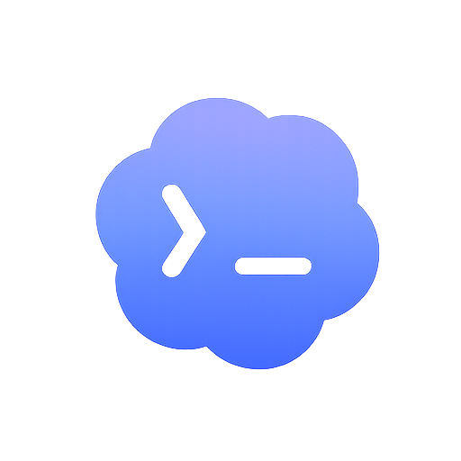
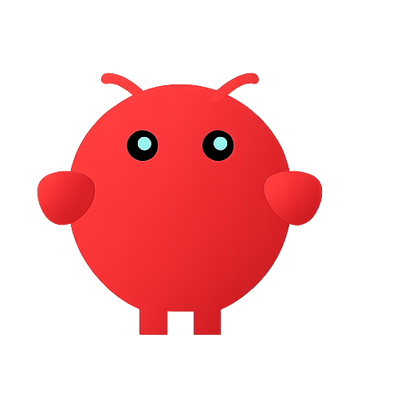
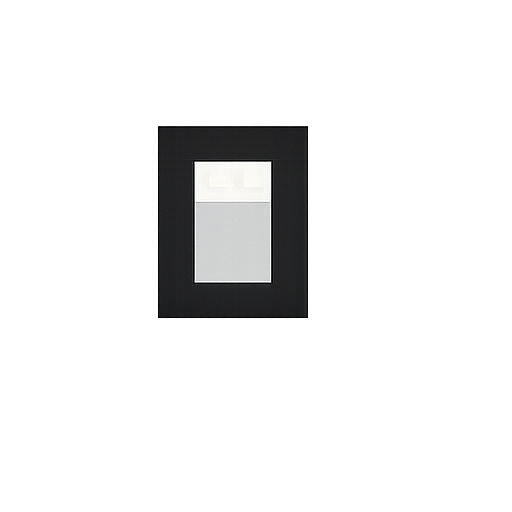
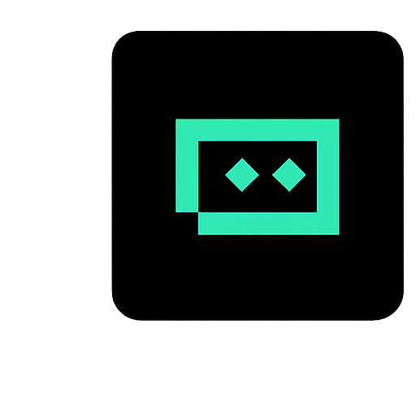

v1.0 · Live
Project-Personalization · Feature-Driven · Multi-Agent
The Agent That Cooks Your |
Start with a generic project. End with a perfectly tailored solution. OpenCook autonomously implements precise, production-grade features to personalize any standard codebase. Driven by deep function characterization and orchestrated subagents, it seamlessly injects custom functionalities exactly where you need them.
6Databases
4Memory Layers
3Agent Roles
∞LLM Providers

Codex
OpenClaw
OpenCode
TRAEConnecting to Vimeo
Loading the demo video...
Live Session
opencook — bash
❯ opencook --target postgresql --func array_to_string
[PlanAgent] Scanning /src/backend/utils/adt/varlena.c ...
[Memory] Loading episodic context · 12 prior tasks found
[CodeAgent] Located PG_FUNCTION_INFO_V1 registration site
[CodeAgent] Writing · builtins.c · pg_proc.dat · sql/functions.sql
✔ array_to_string — implementation complete
[TestAgent] Running pg_regress · 48 / 48 passed
✔ Patch ready · 3 files · 0 regressions